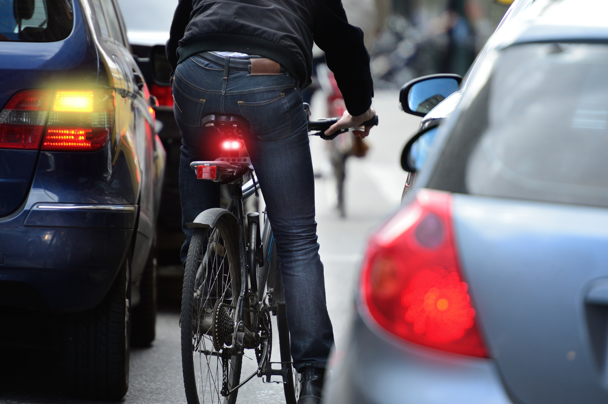

Commuting, whether it's to work, school, or a friend's house, has been made a lot more difficult in the United States. The carcentric road and city designs have made getting to places more time-consuming and dangerous.
The way cities are structured makes it dangerous and inefficient to commute without a car, deterring people from other means of means of transportation, such as biking or riding the bus.
Not only does it affect pedestrians and bikers, drivers are impacted negatively as well. While you'd think a carcentric design would make driving easier and more convenient, it has an opposite effect in some places.

There is a lack of proper pedestrian and bike infrastructure in US cities. The lack of bike lanes and good sidewalks makes it dangerous to get to places by walking or cycling.
The prevalence of stroads furthermore emphasizes this problem, because of their lack of adequate sidewalks, crosswalks, and bike lanes, making them dangerous and unpleasant for pedestrians and cyclists.
The public transportation situation in the US isn't exactly the best. Subways are dangerous and unkept. Buses share roads with cars, making it vulnerable to traffic. If buses have their own lane, and if there are more bike lanes, people will have more reason to use other methods of transportation.